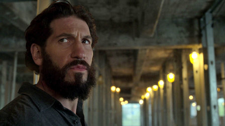

Trailer
Rezumat
După ce s-a răzbunat pe cei responsabili de moartea soției și a copiilor lui, Frank Castle descoperă o conspirație ce se află mai adânc decât aparențele criminalităților din New York. Acum cunoscut prin oraș drept "The Punisher" (Justițiarul), trebuie să afle adevărul nedreptăților ce afectează deja mai mult, pe lângă familia lui.
Părere personală
 Recunosc, am fost confuz în primele episoade. Văzând înainte poze și trailere, ai fi crezut că știi deja din prima cine este eroul. Inițial, Frank Castle poartă cu el un alt nume, și anume Pete Castiglione. În primul episod, este văzut ca fiind un muncitor obișnuit ce lucrează în construcții. Dar caracteristicile lui de apărător al principiilor și al justiției apar încă de atunci. Dorește să decidă el ce e bine și ce e rău, și să aplice într-un mod propriu justiția. Toate acestea ca să se răzbune pe cei care i-au omorât familia și oricine ar fi fost complice la aceasta. Dorește să se răzbune pe cei ce încalcă legea.
În primul sezon, găsește suport în personajul secundar Micro, ce îl ajută pe Frank în a-și rezolva "treburile".
Protagonistul găsește soluții indiferent de orice ar apărea, chiar dacă s-au ivit și obstacole ale justiției reale, poliția și agenți FBI.
O notă personală ar fi 10/10. Fiind un iubitor al filmelor de acțiune, acest film îmi satisface toate nevoile de divertisment și dramă. De asemenea, deși este considerat un erou Marvel, acesta nu are superputeri, ci își folosește forța brută și abilitățile căpătate, fiind un fost soldat al Statelor Unite ale Americii. Personal, a avut tot ce a trebuit, de la acțiune la romanță, de la dramă la thriller.
Recomand cu ardoare vizionarea acestui serial Marvel, ce poate fi vizionat pe Netflix folosind următorul link.